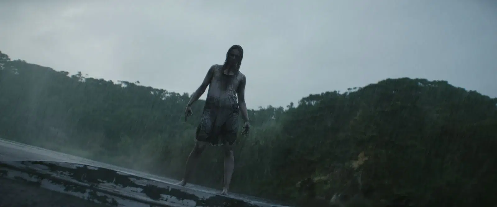

Note : 3/5
Un excellent exercice de style porté par une réalisation ambitieuse, mais qui peine encore à s'affranchir des recettes de la franchise. Sébastien Vaniček livre le meilleur Evil Dead depuis le reboot, sans pour autant lui trouver une véritable identité propre.
⚠️ Attention : cette critique contient des éléments sur l'intrigue du film Evil Dead Burn.
Synopsis
Après la perte de son mari, une femme se réfugie chez sa belle-famille pour tenter de faire son deuil. Mais l'endroit abrite bien plus que de vieux souvenirs : un à un, ses proches se transforment en Deadites, et elle va devoir affronter l'impensable pour honorer une promesse faite de son vivant, celle de veiller sur les siens, même au-delà de la mort.
Un changement de réalisateur qui fait du bien à la franchise
Après Fede Alvarez en 2013 et Lee Cronin sur Rise, c'est au tour de Sébastien Vaniček (déjà remarqué pour Vermines) de reprendre les commandes de la saga. Et ce changement se ressent dès les premières minutes : Evil Dead Burn est, sans grande difficulté, le meilleur volet de cette nouvelle ère Evil Dead.
Un clin d'œil malin à Evil Dead Rise
Petite mention pour l'ouverture du film, qui fait un rapprochement direct avec Evil Dead Rise. Sur le papier, ce n'est pas franchement nécessaire à l'intrigue, mais c'est une excellente façon de planter le décor : en quelques minutes, on retrouve l'ambiance de la franchise et on comprend immédiatement comment le film va fonctionner. Une entrée en matière efficace, qui donne le ton sans perdre de temps.

Une mise en scène qui prend des risques
C'est clairement le point fort du film. La réalisation est ambitieuse, notamment sur les scènes d'action : les transitions sont recherchées, et il y a un plan-séquence qui sort clairement du lot, de ceux qui happent totalement sans qu'on s'en rende compte sur le moment. La transition en miroir pendant une scène de combat est un autre exemple de ce savoir-faire : on sent que Vaniček a voulu exploiter à fond tous les outils à sa disposition pour marquer ses scènes.
Une esthétique qui tranche avec les codes du genre
Visuellement, le film est également très réussi. Fini le gris terne habituel de l'horreur : ici, la palette de couleurs est riche et maîtrisée, donnant au film une identité visuelle forte, presque inhabituelle pour la franchise.
Des scènes solides portées par une bande-son marquante
Dans l'ensemble, les scènes sont bonnes, bien construites et efficaces. Mais s'il y a un élément à mettre en avant à part la mise en scène, c'est la musique. Elle est tout simplement immense : il s'en dégage une tension et une ampleur qui portent véritablement le film, au point que certains morceaux méritent clairement une place dans une playlist à part.
Une suite qui manque encore de personnalité
C'est là que le bât blesse. Le film est objectivement meilleur que le reboot de 2013 et que Rise, ça ne se discute pas. Mais il donne surtout l'impression d'être une version améliorée du même moule, sans réellement se réinventer sur le fond. Une sensation comparable à celle laissée par Destination Final Bloodlines : un film solide dans l'exécution, mais qui reste prisonnier du processus des précédents, sans ce petit supplément narratif qui donnerait vraiment envie de découvrir la suite, pourtant déjà annoncée par la scène post-générique.
Des scènes d'horreur qui font le job, sans plus
Les scènes de peur sont correctes, il y a de vrais sursauts, mais rien qui reste vraiment en tête après le générique. Pour un film d'horreur, on attend un impact qui dépasse le simple jump scare, et sur ce point, Evil Dead Burn reste encore trop sage.
Conclusion
Evil Dead Burn confirme que la franchise peut encore se renouveler visuellement, portée par une mise en scène ambitieuse et une esthétique soignée qui tranche avec les standards du genre. Mais sur le fond, le film reste au milieu du gué : meilleur que ses prédécesseurs, sans pour autant trouver sa propre voix. De quoi rester curieux pour la suite, sans pour autant l'attendre avec impatience.